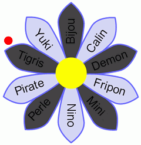
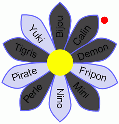
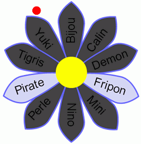

|
Pour décider du nom du chaton qu'elle vient d'adopter, Julie a inscrit des noms sur les pétales d'une fleur. Ensuite, elle a détaché un pétale. Puis elle a détaché un pétale sur deux, en tournant dans le sens des aiguilles d'une montre. Après avoir fini le premier tour, elle a continué à enlever un pétale sur deux parmi les pétales restants, et ainsi de suite, jusqu'à ce qu'il ne reste plus qu'un seul pétale sur la fleur. Si on applique ce jeu sur une fleur à cinq pétales, et que l'on commence par le pétale du haut, on obtient : |
Pour vous aider, vous pouvez cliquer sur les pétales pour les marquer ou démarquer. |
Julie a appliqué ce jeu sur sa fleur à 10 pétales. Le dernier pétale restant était celui portant le nom Pirate.
Quel nom portait le premier pétale détaché par Julie ?
La difficulté avec ce sujet, c'est qu'on ne sait pas par où commencer. Bien sûr, on pourrait essayer tous les pétales de départ possibles, jusqu'à trouver le bon, c'est-à-dire celui qui laisse « Pirate » comme dernier pétale.
On peut cependant procéder de manière beaucoup plus astucieuse. Tout d'abord, commençons de manière arbitraire par le premier pétale, « Bijou ».
| On commence par faire un premier tour, en partant du pétale du haut. | Puis, on passe Yuki, Bijou qui a déjà été enlevé, donc on enlève Calin. | On passe Fripon et on enlève Nino, on passe Pirate et on enlève Yuki. |
|  |  |  |
À la dernière étape, on passe Fripon et on enlève Pirate. Le dernier pétale qui reste est donc « Fripon ».
On observe ainsi que le dernier pétale est le 3e pétale situé après celui que l'on a arraché en premier (en tournant dans le sens des aiguilles de la montre). Cette propriété serait vraie quelque soit le pétale par lequel on commence. Du coup, pour obtenir « Pirate » comme dernier pétale, il faut commencer par le 3e pétale situé avant celui-ci, c'est-à-dire le pétale « Mini ».
Si on veut, on peut vérifier qu'en partant de « Mini » on obtient bien « Pirate », mais en fait il n'y a même pas besoin : ça doit forcément marcher !
Dans ce sujet, le but est de comprendre la description d'un algorithme, décrit par du texte et illustré sur un exemple, puis d'appliquer cet algorithme sur un autre exemple. La difficulté principale est que l'algorithme enlève des pétales, mais dépend des pétales restants pour se poursuivre. Autrement dit, l'action de l'algorithme dépend de l'état de l'objet (la fleur) mais le modifie en même temps (en retirant des pétales).
En informatique, un très grand nombre d'algorithmes opèrent de la sorte : l'algorithme peut modifier à une étape certaines données, sachant que l'état de ces données conditionnera (influencera) par la suite les étapes de ce même algorithme. Comme le suggère le sujet ci-dessus, il peut être très facile de se tromper lorsqu'on essaie de concevoir un tel algorithme ou lorsqu'on essaie de comprendre comment un tel algorithme fonctionne. En effet, on a facilement tendance à oublier de prendre en compte le fait que les données sont modifiées à chaque étape.